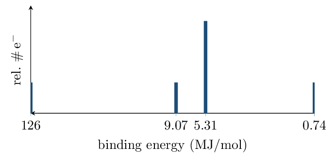

Directions & data
Configurations from memory — no periodic-table peeking until you
check. PES answers must cite peak position or area as evidence.
1. Write shorthand ground-state configurations:
- \(\ce{Si}\): \([\ce{Ne}]\,3s^2\,3p^2\)
- \(\ce{K+}\): \([\ce{Ar}]\)
- \(\ce{N^3-}\): \([\ce{Ne}]\) (\(1s^22s^22p^6\))
- \(\ce{Se}\): \([\ce{Ar}]\,4s^2\,3d^{10}\,4p^4\)
2. Classify each as ground state, excited state, or impossible —
and name the element where one exists:
- \(1s^2\,2s^2\,2p^2\): ground — carbon
- \(1s^2\,2s^2\,2p^7\): impossible (p max 6)
- \(1s^2\,2s^2\,2p^5\,3s^1\): excited neon (10 e\(^-\))
3. How many unpaired electrons in a ground-state N atom?
Draw the 2p orbital diagram to support your count.
3 — Hund's rule: \(\uparrow\ \uparrow\ \uparrow\)
across the three 2p orbitals.
4. The complete PES spectrum of an unknown element:

- Assign every peak to a subshell: 126 \(\to 1s^2\); 9.07 \(\to 2s^2\); 5.31 \(\to 2p^6\); 0.74 \(\to 3s^2\)
- Identify the element, citing total electron count as evidence: \(2+2+6+2 = 12\) e\(^-\) \(\to\) magnesium
- Why does the 2p peak sit at lower binding energy than 2s, even though both are in shell 2?
- Predict two specific changes in this spectrum for the next element (Al).
5. The 1s binding energy of C is 28.6 MJ/mol; of O it is 54.4
MJ/mol. Explain the difference in one Coulombic sentence — no octet
language.
Spiral review • Blocks 1–2 • keep it warm
- Average mass, peaks at 85 u (72%) and 87 u (28%): 85.6 u (Rb)
- Moles of \(\ce{Al}\) in 5.4 g: 0.20 mol
- Empirical formula: 80.0% C, 20.0% H: \(\ce{CH3}\)
- If its molar mass is 30 g/mol, molecular formula: \(\ce{C2H6}\)
- One-particle-type diagram with two-atom units of different elements: element, compound, or mixture? compound